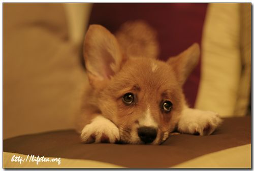
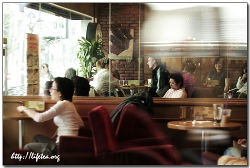

四月的上海 @ Apr 23, 2007
Angie的新伙伴“柯基犬”，您有好名字推荐吗？



四月的上海，有点闷热。



Shin想去这家久闻其名的餐厅吃晚餐，结果令我们三人大失所望。菜做的不怎么样之外，餐厅卫生也不象外面看上去那么好，价格贵，菜既不好吃份量还少得可怜。强烈不推荐，除非您在减肥~

上周五下午沪宁高速开了两个多小时，赶在晚上7点左右接到Angie直接往徐家汇的上海体育馆走。张学友的演唱会在7：30开始，结果我们从苏州河到徐家汇到找到停车的地方花了将近2个小时。即使有钱在上海过得也不会痛快，哪怕开着法拉利。这么拥挤的交通，这么多人，显得整个城市乱糟糟闹哄哄的，人心也不由地烦躁！一路小跑进馆内，居然演出还持续了一个多小时，Jacky的情歌唱得颇为用情，唱得人的情绪随之起起浮浮，不愧为天王，不枉我们对他的喜爱。当我们开心得啃着鸡腿喝着饮料去拿车时，老远发现上面贴着一张罚单，NND~~这就是上海！所有停靠在马路两边的汽车都贴了违停罚单！停车的时候警察叔叔就在不远处执勤，车子几乎停满馆外的两侧马路。上海的交警一定是很富裕的职业吧？！
9 Responses to “四月的上海”
2007-04-23
以前养过一只懒猴叫泡泡。我看这个小东西的眼睛也骨溜溜的，试试这个名字？
2007-04-23
就叫虎虎呗,样子蛮神的,是个男孩吧!
2007-04-23
这样子叫”神”?眼睛没灵气的,不过叫得声音挺响滴~
2007-04-23
像小狐狸
叫Fox吧
或者福克斯，呵呵
小名小福；阿福
。。。。。
2007-04-23
叫可乐吧……
果然还是去看了Jacky的演唱会阿
我是周六去的，六点多就进场了，哈哈
有几张好像是在coffee bean
那个饭店没认出来……无二？
上海人的确多，不过凭我在两地开车的经验来说，上海有一点比南京要好些，就是行人不大会乱穿马路，不过找停车的地方的确不是一般二般的难……
俗话就是说，在上海，反正停车就得给钱，停的对少交点，停的不对就多交点……哈哈
2007-04-24
怎么现在看又有点像小狮子
2007-04-24
像小狼！戴着“白手套”，看上去像个淑女。
2007-04-24
既然都喜欢张学友,那就jack好了:)
2007-05-20
终于在二年后再次找到chinese tea.那天我也去看了那场演唱会。黑压压的人群中居然有你。
Leave A Reply
存档只读，评论已关闭。